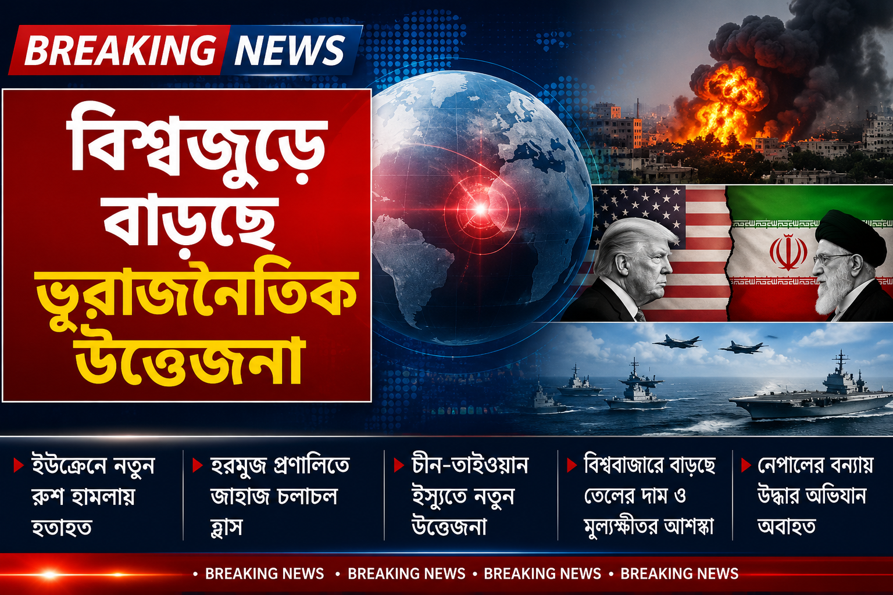

বিশ্বজুড়ে বাড়ছে ভূরাজনৈতিক উত্তেজনা, যুদ্ধ ও অর্থনৈতিক অনিশ্চয়তায় নতুন চাপ

বিশ্ব রাজনীতিতে নতুন করে উত্তেজনা বাড়ার পাশাপাশি যুদ্ধ, জ্বালানি বাজার এবং বৈশ্বিক অর্থনীতিকে ঘিরে অনিশ্চয়তা তৈরি হয়েছে। ইউক্রেন যুদ্ধ, মধ্যপ্রাচ্যের সংঘাত, যুক্তরাষ্ট্র-ইরান উত্তেজনা এবং চীন-তাইওয়ান সম্পর্ক—একাধিক ইস্যু একই সময়ে আন্তর্জাতিক রাজনীতির কেন্দ্রবিন্দুতে রয়েছে।
ইউক্রেনে নতুন হামলায় হতাহতের খবর
ইউক্রেনের রাজধানী কিয়েভ ও আশপাশের এলাকায় রুশ হামলার ঘটনা নিয়ে আন্তর্জাতিক অঙ্গনে উদ্বেগ অব্যাহত রয়েছে। রয়টার্সের প্রতিবেদনে বলা হয়েছে, ১ সেপ্টেম্বর কিয়েভ অঞ্চলে রুশ বিমান হামলায় অন্তত ৯ জন নিহত এবং আরও অনেকে আহত হয়েছেন। কিয়েভ শহরেও হতাহতের খবর পাওয়া গেছে।
হামলার ফলে বিভিন্ন স্থানে আগুন ও অবকাঠামোগত ক্ষয়ক্ষতির খবর পাওয়া গেছে। একই সময়ে যুদ্ধ বন্ধে কূটনৈতিক তৎপরতাও চলছে। ফলে সামরিক সংঘাতের পাশাপাশি সম্ভাব্য শান্তি আলোচনাও আন্তর্জাতিক পর্যবেক্ষকদের নজরে রয়েছে।
মধ্যপ্রাচ্যে উত্তেজনার প্রভাব জ্বালানি বাজারে
মধ্যপ্রাচ্যের উত্তেজনার সরাসরি প্রভাব পড়ছে আন্তর্জাতিক জ্বালানি বাজারে। হরমুজ প্রণালিতে জাহাজ চলাচল সাম্প্রতিক সময়ে স্বাভাবিক মাত্রার তুলনায় অনেক কম রয়েছে। ১ সেপ্টেম্বরের তথ্য অনুযায়ী, ওই দিন মাত্র পাঁচটি পণ্যবাহী জাহাজ প্রণালিটি অতিক্রম করেছে এবং কোনো তরল জ্বালানি বহনকারী ট্যাংকার দেখা যায়নি।
হরমুজ প্রণালি বিশ্বের অন্যতম গুরুত্বপূর্ণ জ্বালানি পরিবহনপথ হওয়ায় সেখানে দীর্ঘস্থায়ী অস্থিরতা তৈরি হলে আন্তর্জাতিক বাজারে তেল ও গ্যাসের সরবরাহ নিয়ে উদ্বেগ আরও বাড়তে পারে।
বিশ্ববাজারে বাড়ছে মূল্যস্ফীতির আশঙ্কা
জ্বালানির দাম ও ভূরাজনৈতিক ঝুঁকি বাড়ায় বৈশ্বিক বন্ড বাজারেও চাপ তৈরি হয়েছে। রয়টার্সের তথ্য অনুযায়ী, যুক্তরাষ্ট্র, জাপান, ইউরোপ ও অস্ট্রেলিয়ার বন্ডের সুদহার বেড়েছে। একই সময়ে ব্রেন্ট অপরিশোধিত তেলের দাম ব্যারেলপ্রতি ৯১ ডলারের ওপরে উঠেছে।
অর্থনীতিবিদ ও বিনিয়োগকারীদের উদ্বেগের একটি বড় কারণ হলো—জ্বালানির দাম দীর্ঘ সময় বেশি থাকলে উৎপাদন ও পরিবহন ব্যয় বাড়তে পারে। এর প্রভাব শেষ পর্যন্ত বিভিন্ন দেশের বাজারে পণ্য ও সেবার দামেও পড়ার সম্ভাবনা থাকে।
চীন-তাইওয়ান ইস্যুতে নতুন উত্তেজনা
প্রশান্ত মহাসাগরীয় অঞ্চলেও রাজনৈতিক উত্তেজনা দেখা দিয়েছে। পালাউতে অনুষ্ঠিত প্যাসিফিক আইল্যান্ডস ফোরামের বৈঠকে তাইওয়ানের অংশগ্রহণ নিয়ে চীন আপত্তি জানিয়েছে। চীনা প্রতিনিধি তাইওয়ানের উপস্থিতির বিষয়ে সম্ভাব্য পরিণতির সতর্কতা দিয়েছেন। অন্যদিকে তাইওয়ান জানিয়েছে, তারা প্রশান্ত মহাসাগরীয় দেশগুলোর সঙ্গে উন্নয়ন ও সহযোগিতা অব্যাহত রাখতে চায়।
এই ঘটনা এশিয়া-প্রশান্ত মহাসাগরীয় অঞ্চলে চীন, যুক্তরাষ্ট্র ও তাদের অংশীদারদের মধ্যে ক্রমবর্ধমান কৌশলগত প্রতিযোগিতার আরেকটি উদাহরণ হিসেবে দেখা হচ্ছে।
উত্তর কোরিয়া-যুক্তরাষ্ট্র সম্পর্কেও আলোচনার সম্ভাবনা
উত্তর কোরিয়া ও যুক্তরাষ্ট্রের মধ্যে আবারও কূটনৈতিক যোগাযোগের সম্ভাবনা তৈরি হয়েছে বলে দক্ষিণ কোরিয়ার একজন আইনপ্রণেতা জানিয়েছেন। দক্ষিণ কোরিয়ার গোয়েন্দা সংস্থার ব্রিফিংয়ের ভিত্তিতে তিনি বলেছেন, দুই দেশের মধ্যে নতুন করে আলোচনা শুরু হওয়ার কিছু ইঙ্গিত পাওয়া যাচ্ছে।
তবে এখনো সরাসরি আলোচনার বিষয়টি নিশ্চিত হয়নি। উত্তর কোরিয়ার পারমাণবিক ও ক্ষেপণাস্ত্র কর্মসূচি দীর্ঘদিন ধরেই পূর্ব এশিয়ার নিরাপত্তার অন্যতম বড় উদ্বেগ।
নেপালে বন্যার পর উদ্ধার অভিযান
দক্ষিণ এশিয়ার আরেক দেশ নেপালেও ভয়াবহ বন্যার পর উদ্ধার অভিযান চলছে। দুর্গম এলাকায় আটকে থাকা মানুষদের কাছে পৌঁছাতে উদ্ধারকারীরা অস্থায়ী সেতু তৈরি করছেন। ধ্বংসপ্রাপ্ত অবকাঠামোর কারণে অনেক এলাকায় যোগাযোগ কঠিন হয়ে পড়েছে।
প্রাকৃতিক দুর্যোগের এই ঘটনা আবারও জলবায়ু পরিবর্তন, দুর্যোগ প্রস্তুতি এবং পাহাড়ি অঞ্চলের অবকাঠামো নিয়ে আন্তর্জাতিক পর্যায়ে আলোচনার প্রয়োজনীয়তা সামনে এনেছে।
সামনে বিশ্বের জন্য বড় চ্যালেঞ্জ
বর্তমান আন্তর্জাতিক পরিস্থিতিতে একাধিক সংকট একই সঙ্গে কাজ করছে। যুদ্ধ ও রাজনৈতিক উত্তেজনার পাশাপাশি জ্বালানি মূল্য, মূল্যস্ফীতি, বাণিজ্য, সরবরাহ ব্যবস্থা এবং জলবায়ুজনিত দুর্যোগ বিশ্ব অর্থনীতির ওপর চাপ তৈরি করছে।
বিশেষজ্ঞদের জন্য সবচেয়ে বড় প্রশ্ন হলো—দেশগুলো কীভাবে সামরিক উত্তেজনা কমিয়ে কূটনৈতিক সমাধানের দিকে এগোবে এবং একই সঙ্গে বৈশ্বিক অর্থনীতিকে স্থিতিশীল রাখবে।
বিশ্বের বড় শক্তিগুলোর সিদ্ধান্ত শুধু তাদের নিজেদের দেশেই প্রভাব ফেলে না; উন্নয়নশীল দেশগুলোর খাদ্য, জ্বালানি, আমদানি ব্যয়, বৈদেশিক মুদ্রা এবং কর্মসংস্থানের ওপরও এর প্রভাব পড়ে।
উপসংহার
বর্তমান বিশ্ব পরিস্থিতি দেখাচ্ছে যে আন্তর্জাতিক রাজনীতি ও অর্থনীতি এখন আগের চেয়ে অনেক বেশি পরস্পরনির্ভর। একটি অঞ্চলের যুদ্ধ বা রাজনৈতিক সংকট খুব দ্রুত অন্য অঞ্চলের জ্বালানি বাজার, বাণিজ্য ও অর্থনীতিতে প্রভাব ফেলতে পারে।
তাই যুদ্ধ ও সংঘাতের পরিবর্তে কূটনৈতিক আলোচনা, আন্তর্জাতিক সহযোগিতা এবং শান্তিপূর্ণ সমাধানের পথই বিশ্ব স্থিতিশীলতার জন্য সবচেয়ে গুরুত্বপূর্ণ হয়ে উঠছে।